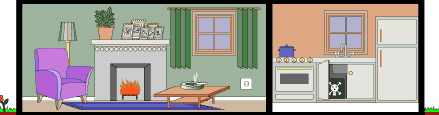

<!DOCTYPE html>
<head>
    <meta charset="UTF-8">
    <title>10.Оператор delete</title>

    <script type="text/javascript">

        var house = {
            roof: "<br/>",
            secondFloor: "<br/>",
            firstFloor: "<br/>",
            basement: "<br/>",
            address: "<p style='color:green'>UK. London. Muswell Hill. N10<hr/>"
        };
        // Строительство дома.

        if ("secondFloor" in house) {
            // Удаление свойства secondFloor из объекта house.
            delete house.secondFloor;
        }
        for (element in house) {
            document.write(house[element]);
        }
        if ("roof" in house) {
            // Удаление свойства secondFloor из объекта house.
            delete house.roof;
        }
        for (element in house) {
            document.write(house[element]);
        }
    </script>

</head>
<body>
</body>
</html>
